Version History
| Ver | Implemented By | Revision Date | Version Summary |
|---|---|---|---|
| 1.0 | Fadhil Maulana | 26 Maret 2026 | Initial Draft - Pembuatan Manual Book Fitur Pemerataan Stock |
| 1.1 | Fadhil Maulana | 26 Maret 2026 | Penambahan penjelasan lengkap bagian FILTER dan TO DO Bagian Kanan, Penjelasan detail Coverage Days, Safety Days, Days to Count, Lambda Value, Cara kerja Exponential Smoothing + Available Stock, Preview Report & Info Tambahan, Kolom tabel hasil Generate Data, Limit & Offset. |
| 1.2 | Fadhil Maulana | 10 April 2026 | Menambahkan checkbox Send Form (Parangloe, Tangerang, Toko) dan rute transfer (Parangloe to Tangerang, Toko To Tangerang). |
| 1.3 | Fadhil Maulana | 10 April 2026 | Menambahkan Fitur Picking List & Fitur Mutasi Antar Toko. |
| 1.4 | Fadhil Maulana | 10 April 2026 | Menambahkan Fitur Download Laporan Stock Akhir Setelah Pemerataan. |
| 1.5 | Fadhil Maulana | 16 April 2026 | Menambahkan Fitur Autopicking List Gudang dan Toko. |
Definisi Fitur Pemerataan Stock
Pemerataan Stock adalah proses memindahkan stok barang dari lokasi yang kelebihan (*overstock*) ke lokasi yang kekurangan (*stockout/understock*).
Fitur ini menerapkan algoritma Exponential Daily Sales yang dikombinasikan dengan Available Stock untuk menganalisa tren penjualan harian secara otomatis. Hasilnya digunakan untuk menghitung stok ideal di setiap lokasi, sehingga proses pemindahan stok menjadi lebih akurat, tepat sasaran, serta meminimalkan risiko kehilangan penjualan.
Jika sistem mendeteksi tren penjualan naik di satu cabang melalui Exponential Smoothing, maka cabang tersebut akan direkomendasikan mendapat tambahan stok dari cabang lain yang penjualannya sedang rendah (berdasarkan kapasitas Available Stock-nya).
Step 1. Cara Akses Menu Pemerataan Stock
-
1
Pastikan Sudah Login Odoo
Akses domain resmi internal apps server Odoo perusahaan Anda.
-
2
Buka Modul Inventory
Pilih aplikasi Inventory pada dashboard utama.
-
3
Navigasi Pemerataan Stock
Klik Menu Pemerataan Stock, lalu klik submenu Pemerataan Stock.

Step 2. Panduan Pengisian Parameter & Filter Form
Sebelum melakukan generate data, Anda wajib melengkapi parameter filter di sisi kiri dan konfigurasi perhitungan di sisi kanan formview:

📋 Bagian Filter (Kiri)
- Name: Nama atau judul identitas dokumen pemerataan stock.
- Barcodes in csv: Masukkan daftar SKU jika ingin menyaring varian produk spesifik.
- Family: Isi nama kategori produk jika ingin memfilter kelompok family tertentu.
- Operating Units: Filter unit cabang operasional tertentu.
- Limit: Batas maksimal data baris produk yang ditampilkan saat proses penarikan data (*generate data*).
- Send Form Checkboxes (Parangloe / Tangerang / Toko): Centang opsi yang sesuai untuk mengaktifkan izin pengiriman stok dari Gudang Parangloe, Gudang Tangerang, atau entitas Toko terkait.
- Route Checkboxes (Parangloe to Tangerang / Toko to Tangerang): Centang opsi ini jika mekanisme distribusi ditujukan khusus antar wilayah tersebut.
- Exclude New Product & New Product Days: Mengaktifkan pengecualian produk baru dari proses kalkulasi distribusi. Jika diisi 90, maka produk berumur < 90 hari akan diabaikan.
⚙️ Bagian Konfigurasi & Variabel (Kanan)
- Is Auto Generate Purchase Order: Centang jika ingin mengaktifkan fitur pembuatan Purchase Order otomatis.
- Coverage Days: Target kecukupan jumlah hari stok untuk menutupi perkiraan penjualan di lokasi tujuan.
- Safety Days: Stok cadangan pengaman dinyatakan dalam satuan hari untuk mitigasi ketidakpastian tren pasar.
- Days to Count: Rentang historis data transaksi penjualan harian (dalam satuan hari) yang ditarik oleh rumus Exponential.
- Lambda Value: Faktor koefisien smoothing Exponential pada perhitungan *Daily Sales*. Semakin tinggi nilainya, kalkulasi sistem semakin responsif terhadap pergerakan tren penjualan teraktual.
- Allow Cross-Island: Centang untuk mengizinkan instruksi rekomendasi transfer antar pulau.
- Max KM: Batas maksimum toleransi jarak logistik (Kilometer) antar lokasi pengirim dan penerima.
- Result Order By: Preferensi urutan data (misal: Best Seller 30 Days, Product Name, Prioritas, dll).
-
Order Direction:
- Ascending : Urutan dari jumlah terkecil ke terbesar.
- Descending : Urutan dari jumlah terbesar ke terkecil.
Opsi Modus Tampilan Kolom (*Show View*):
Menampilkan kolom kuantitas (QTY) dan Toko Tujuan secara terpisah dalam grid yang berbeda. Model ini memiliki kelemahan karena menyulitkan pengguna saat membaca korelasi kuantitas barang ke toko tujuan.
Menyatukan kolom tujuan langsung dengan jumlah kuantitas yang harus ditransfer. Format penulisan ringkas, contoh: PR(104) yang mengindikasikan lokasi tujuan adalah PR dengan kuantitas kirim sejumlah 104 unit.
Step 3. Eksekusi Generate & Preview Report
Setelah seluruh konfigurasi variabel diisi, klik tombol Generate Report untuk memicu kalkulasi background job sistem.
Jika proses kalkulasi selesai, klik tombol Preview Pemerataan untuk memunculkan data grid interaktif hasil komparasi.


Step 4. Fitur Unduh Dokumen Output & Laporan
Gunakan tombol-tombol fungsional ekspor di bagian atas form view untuk mengunduh berkas spreadsheet pendukung:
Klik tombol Download Lap Pemerataan untuk mengunduh hasil dari pemerataan stock yang sudah di generate dalam ekstensi Excel.
Cara Download Laporan Stock Akhir Setelah Pemerataan
Mekanisme mengekstrak simulasi laporan posisi saldo stok final pasca alokasi perpindahan barang:
1. Buka Modul Inventory >> Menu Laporan >> Pemerataan Stock.
2. Cari dan berikan tanda centang (*select*) pada salah satu atau beberapa daftar baris record data dokumen yang ingin diekspor.
3. Klik menu tombol dropdown Action di bagian tengah atas, lalu pilih opsi menu Download Laporan Stock Akhir.
4. Isi parameter isian popup wizard form yang muncul:
- Name: Nama file excel keluaran.
- Operating Unit: Unit kantor cabang yang ingin ditinjau nilai saldo akhir stoknya.
- Maksimum Stock Akhir: Nilai kuantitas batas atas ketersediaan barang (*Available Qty*) pasca kalkulasi alokasi dilakukan.


Panduan Membuat Autopicking List
Fitur ini mempermudah pembuatan otomatis dokumen Picking List logistik tanpa perlu menginput baris item satu per satu secara manual:
1. Alur Inisiasi: Buka submenu Pemerataan Stock >> Pilih dokumen pemerataan stock yang ingin dibuat dokumen picking list >> Klik Action >> Pilih fungsi Create Batch Picking List.
2. Pop up Wizard Form: Klik Confirm. Maka nanti laporan pemerataan stock yang dipilih tadi membentuk dokumen picking list dan status di pemerataan tadi menjadi DONE.


3. Batch Picking List hasil dari pemerataan:
Masuk ke Modul Inventory >> Klik Batch Picking List. Sistem akan menampilkan seluruh batch dokumen picking list sesuai dengan data yang dipilih pada laporan pemerataan.


Panduan Membuat Autopicking List Lanjutan -> Hingga Terbentuk Internal Transfer
Fitur ini mempermudah pembuatan otomatis dokumen Picking List logistik tanpa perlu menginput baris item satu per satu secara manual:
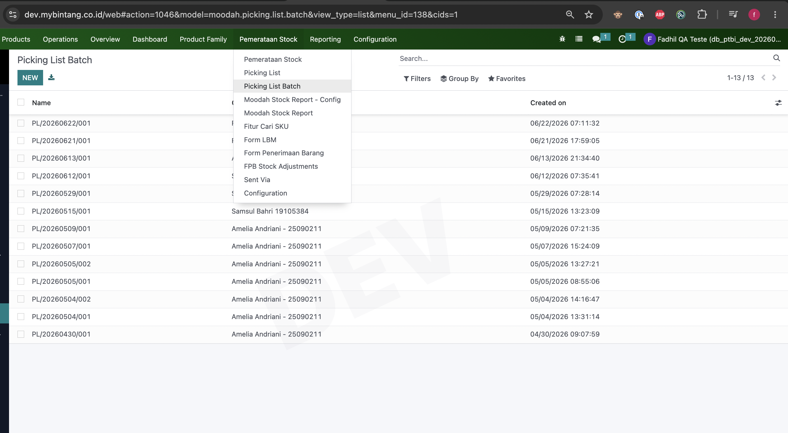
2. Muncul Form ketika user create batch picking list 3. Klik Open pada picking yang akan dilakukan perhitungan dan dibuat internal transfer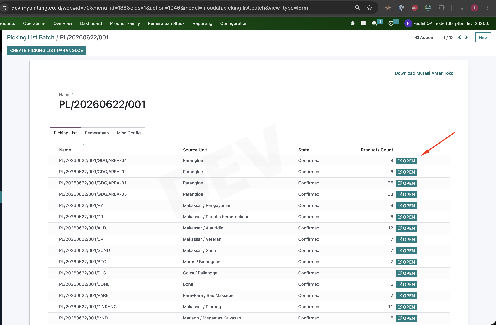
4. Setelah klik open pada picking list batch maka akan muncul form seperti dibawah ini (Klik Start Jika Crew/Logistik Sudah siap untuk menghitung Produk real yang ada di gudang/toko)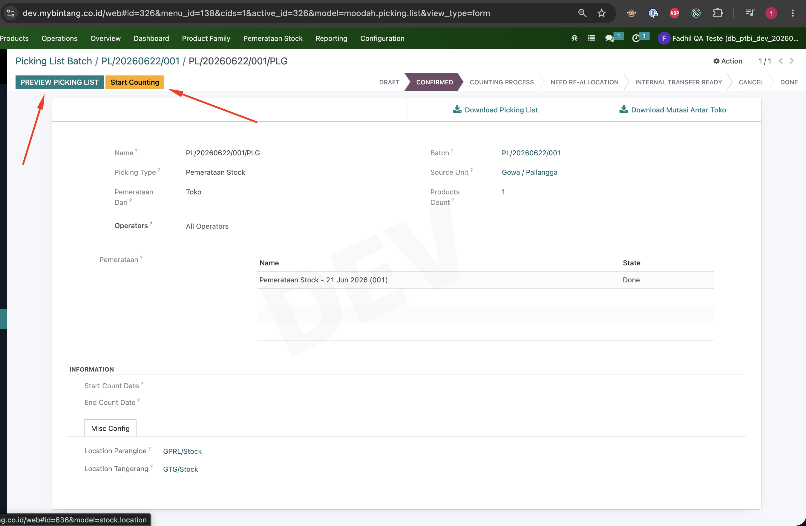
Ketika diklik Start Counting maka status akan update menjadi Counting Proses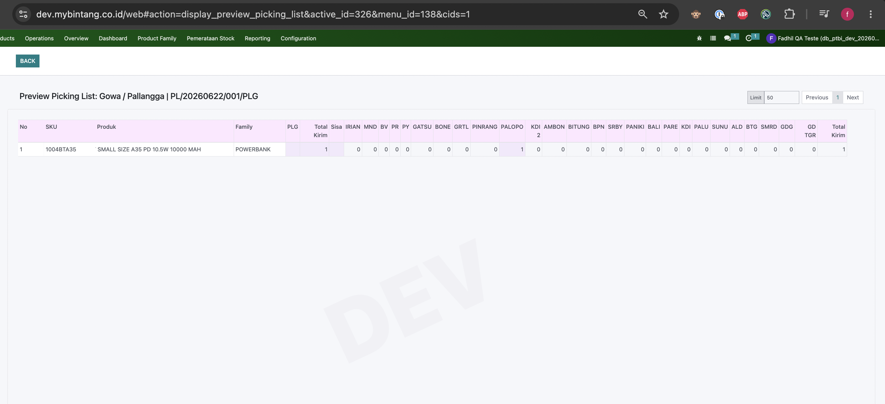
Preview Picking List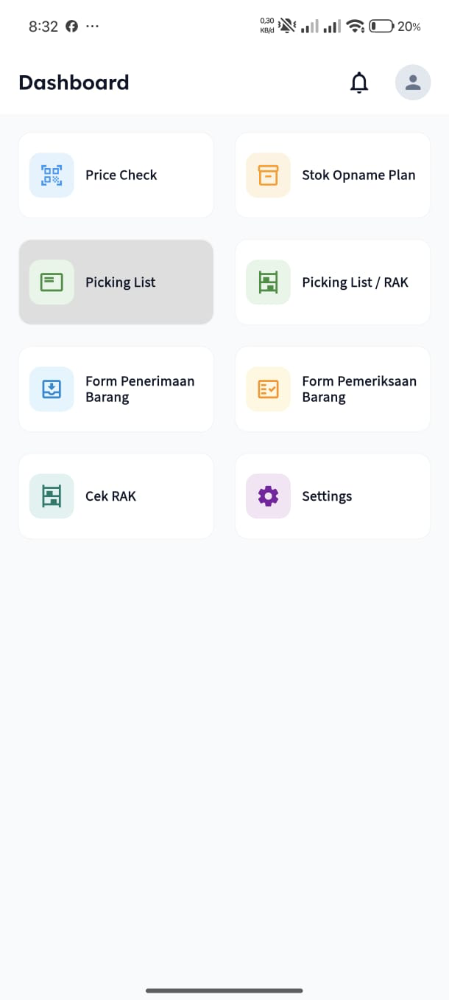
7. Selanjutnya Crew/Logistik Pilih List yang statusnya sedang dihitung.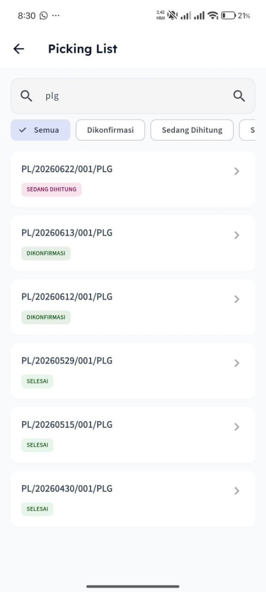
8. Selanjutnya Crew/Logistik setelah memilih Picking List yang akan dihitung, maka nanti didalam form mobile Picking List akan muncul list-list Product yang harus dihitung real qty sesuai dengan area nya. (Contohnya ada dibawah ini Picking list PL/20260622/001/PLG ).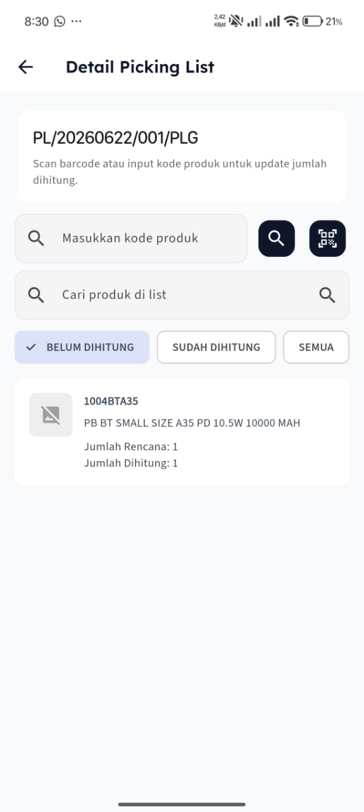
9. Klik Product yang akan dihitung, Jika Qty Tidak Sama Maka Akan Muncul Notes Yang Wajib Diisi Sebelum Klik Save.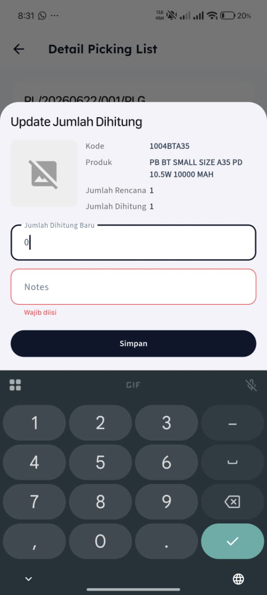
10. Berikut Contoh Perhitungan Produk pada Picking List PL/20260622/001/PLG (Semua Product pada Picking list ini Qty nya Sama Dengan Product yang tertera pada picking list, tinggal klik Simpan).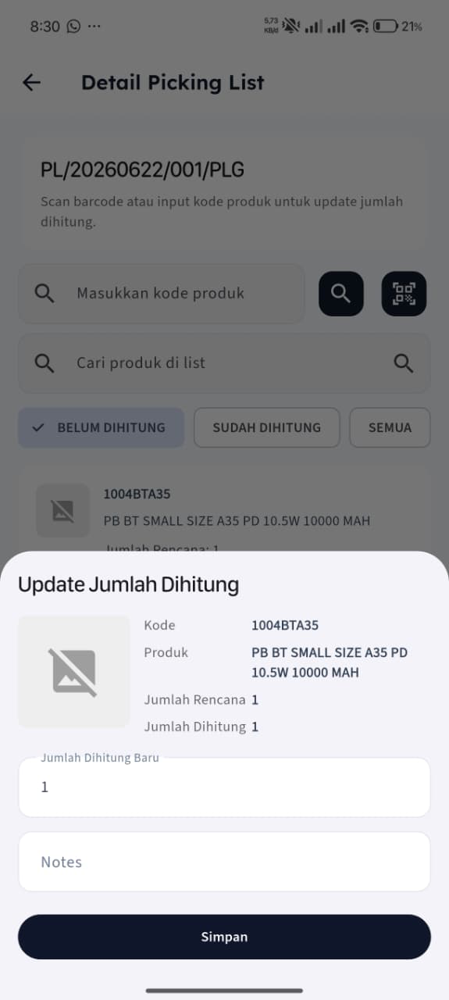
11. Jika Product sudah dihitung oleh tim Crew/Logistik dan sudah disimpan, maka pada list Picking List akan muncul tombol Stop Counting. Klik Stop Counting untuk menyimpan hasil perhitungan.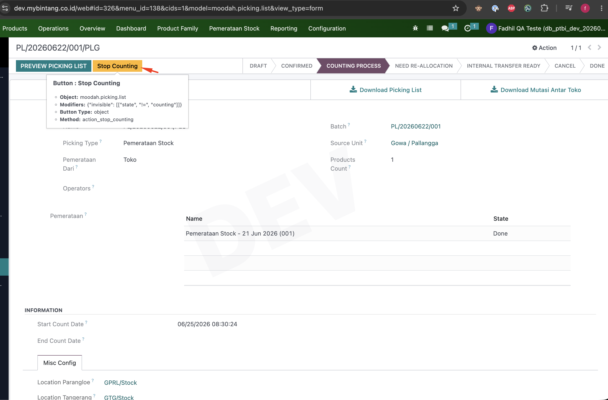
12. Jika Proses Hitung Selesai, maka selanjutnya untuk membuat Internal Transfer kembali ke halaman utama Picking List (Odoo Web) lalu klik Tombol Create Internal Transfer.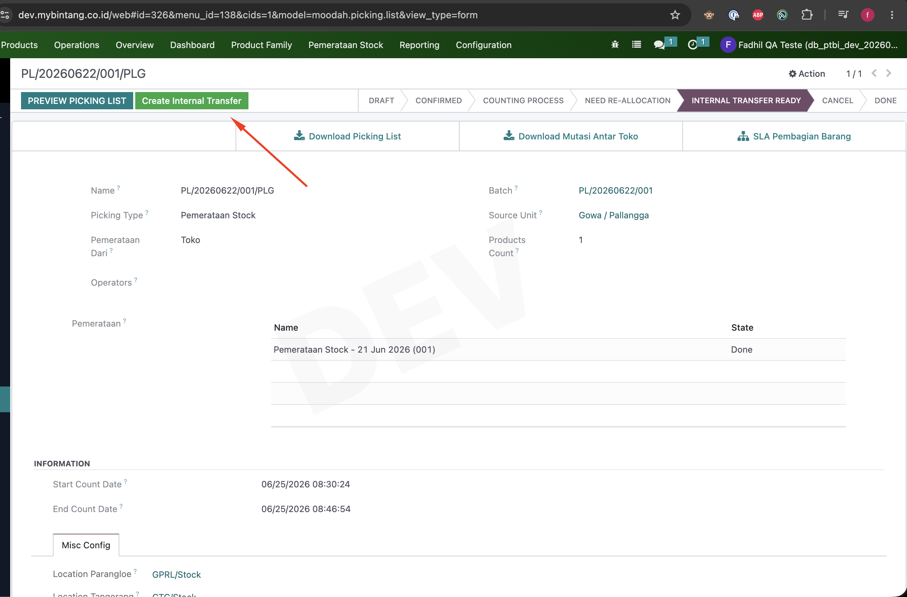
13. Setelah Klik Create Internal Transfer, akan muncul Button View Internal Transfer (Untuk Melihat Draft ITF) dan Confirm All Internal Transfer (Untuk Mengupdate semua ITF dari picking list tersebut menjadi Ready).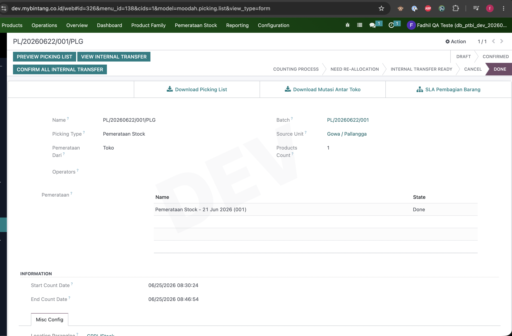
14. Selanjutnya Klik Tombol View Internal Transfer untuk melihat Draft dari ITF yang akan dikirim.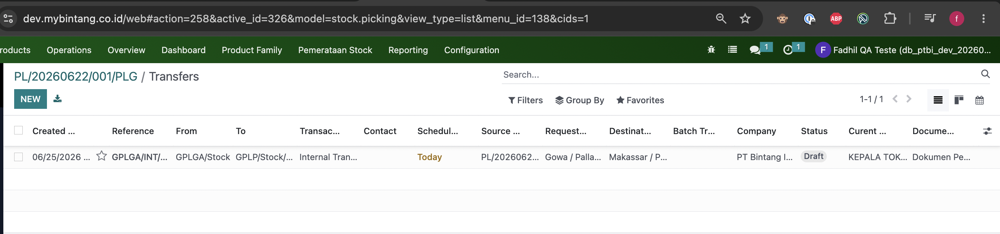
15. Selanjutnya Klik Tombol Confirm All Internal Transfer untuk mengupdate semua ITF dari picking list tersebut menjadi Ready, Selanjutnya tinggal cek berkala (View Internal Transfer).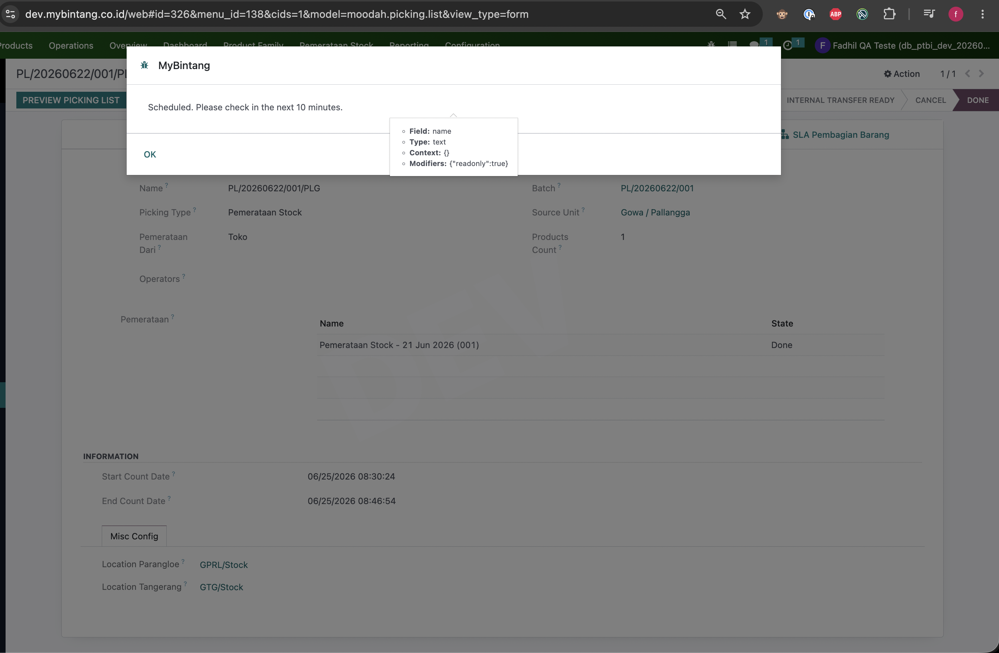